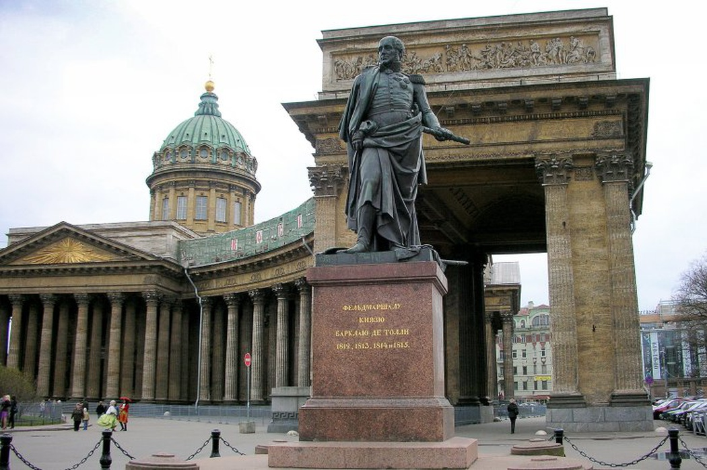
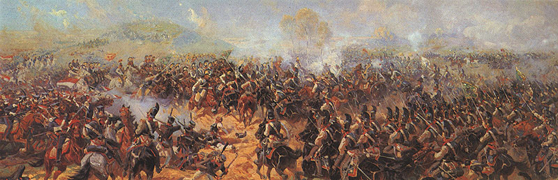
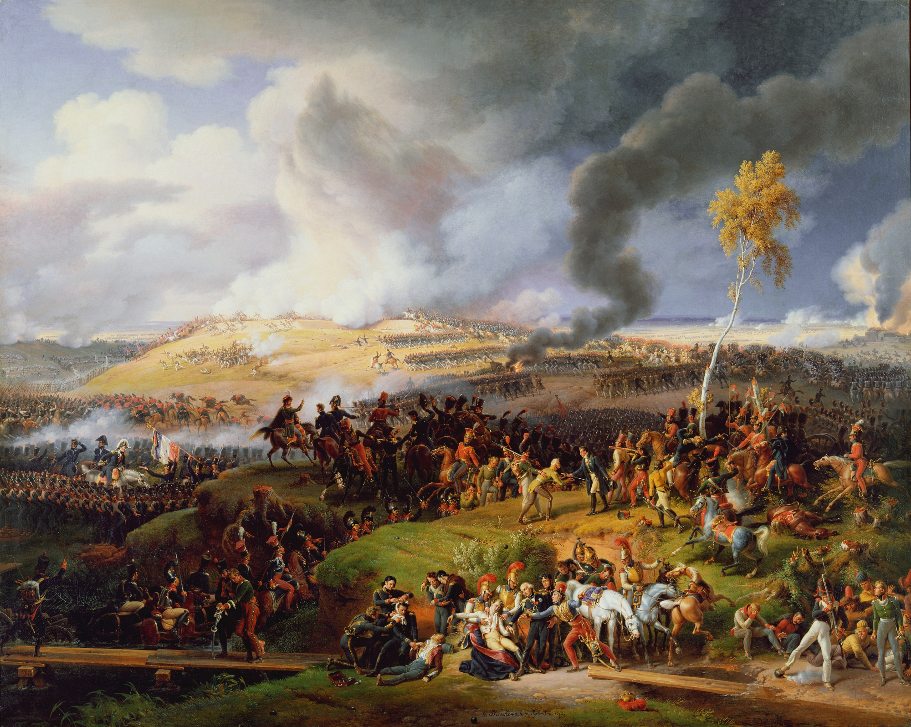
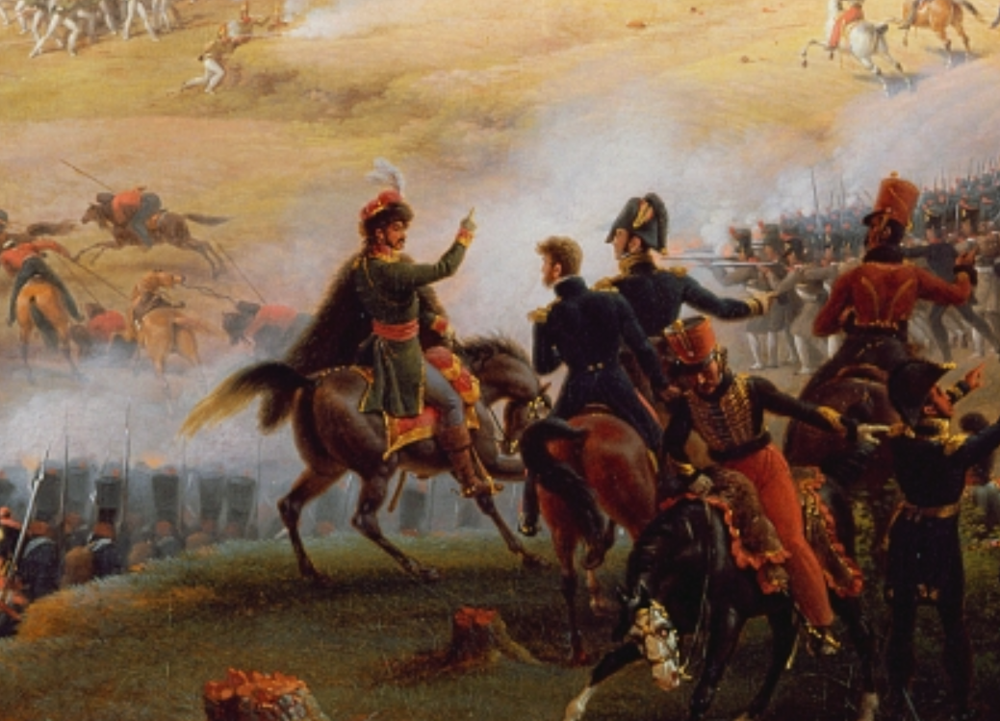
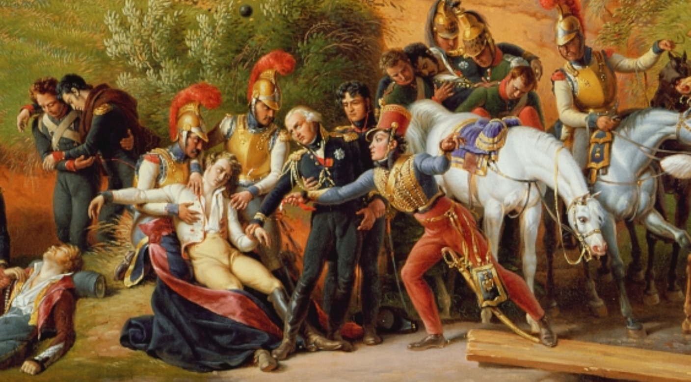
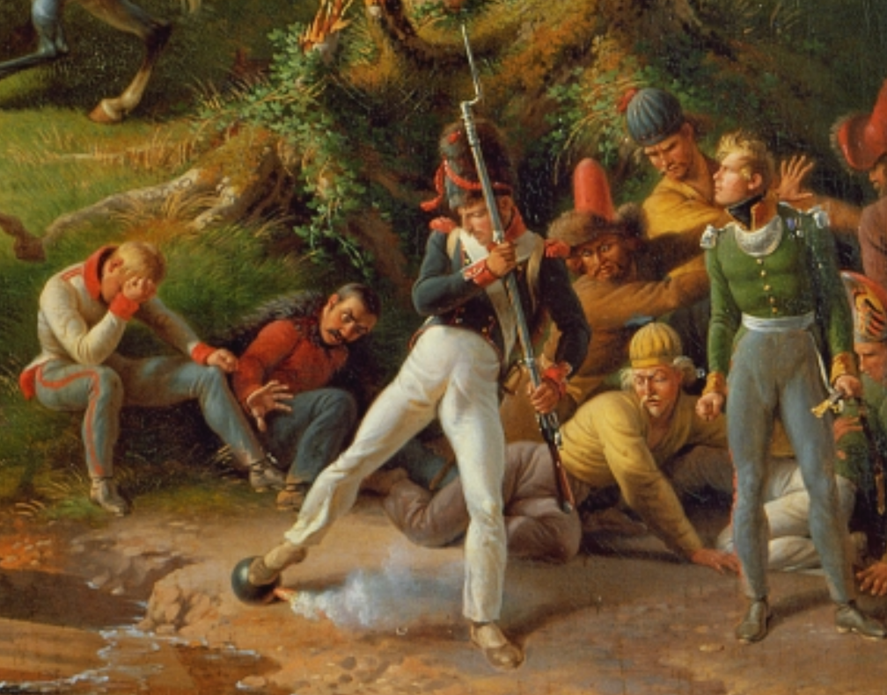

보로디노 전투 (12) - 허무한 결말
게시: 2020-10-12T06:30:48+09:00
나폴레옹이 근위대 투입을 주저하며 머뭇거리던 3시간은 러시아군에게는 정말 소중한 재정비 기회였습니다. 쿠투조프는 여전히 고르키 마을에서 참모들과 노닥거리고 있었지만 바클레이는 러시아 방어선 우익에 포진되어 있던 병력을 대거 중앙과 좌익 쪽으로 옮겨 허물어진 방어선을 재구성했습니다. 특히 러시아군의 맹렬한 포격에도 불구하고 프랑스군이 라에프스키 보루 앞에 정렬했으므로 그 쪽으로 강력한 공격이 가해질 것이 뻔했으므로, 라에프스키 보루의 양 옆에도 보병들을 포진시켰고, 보루 뒤 800m 후방에는 보병과 포병으로 제2 방어선도 든든히 구축해놓았습니다. 콜랭쿠르가 목숨을 버려가며 점령한 라에프스키 보루는 그 한 가운데에 있었던 것입니다.

(상트 페체르부르그 카잔 성당 인근에 있는 바클레이의 동상입니다. 분명히 그는 여기에 서 있을 자격이 있습니다.) 라에프스키 보루를 점령하고 방어선을 돌파했다고 환호하던 프랑스 기병대는 이제 바클레이의 보병 방진을 뚫어야 했습니다. 이건 사실상 불가능에 가까운 일이었습니다. 더군다나 프랑스 기병대의 말들은 몇 주 동안이나 제대로 먹지 못하고 이질에 시달리던 상태라 더더욱 불가능했습니다. 그럼에도 불구하고 프랑스 기병대는 말을 달려 이들에게 달려들었지만, 바클레이가 직접 지휘하는 러시아 보병들은 침착하게 머스켓 소총 사격을 퍼부으며 그렇쟎아도 손실이 컸던 프랑스 기병대에게 무의미한 희생을 강요할 뿐이었습니다. 특히 보병 방진 모서리 부분마다 설치된 러시아 포병대는 접근하는 기병대에게 끔찍한 포도탄과 캐니스터탄을 퍼부었으므로, 결국 프랑스 기병대의 희생은 차곡차곡 늘어났습니다. 보병 방진은 기병대에게는 무적이었지만 반대로 그런 밀집대형은 포병에게는 매우 취약했습니다. 그대로 기다리고 있으면 곧 프랑스 포병대가 전진 배치되어 러시아 보병 방진을 갈기갈기 찢어놓을 것이 뻔했습니다. 바클레이는 그걸 기다릴 사람이 아니었습니다. 이때 현장을 직접 지휘했던 바클레이는 언제나처럼 침착하고 차분한 모습이었지만, 그를 아는 사람들은 이 날 그는 마치 명예로운 죽음을 찾아 헤매는 것 같은 인상을 받았다고 합니다. 총사령관직은 쿠투조프에게 빼앗겼지만 여전히 제1군 사령관이었던 그는 이미 군중에서 온갖 욕은 다 먹고 있던 처지인지라, 차라리 전사함으로써 명예를 되찾고자 하는 생각도 있었던 것 같습니다. 그는 가만히 앉아서 기다리다간 곧 몰려올 프랑스 포병들의 밥이 된다는 것을 알고 있었고, 그런 상황에 대비하여 준비해둔 예비 기병대에게 돌격 명령을 하달했습니다. 그런데 예비 기병대가 없었습니다 ! 알고보니 이 날 하루종일 미친년 널뛰는 듯한 지휘를 보여준 쿠투조프가 그 예비 기병대의 직속 상관인 바클레이에게 전혀 알리지 않고 제멋대로 다른 장소로 이동 배치했던 것입니다. 이런 코미디 와중에도 바클레이는 굴하지 않고 인근 지역의 기병대를 박박 긁어모아 기어코 반격에 나섰습니다. 곧 이 일대는 양측 기병대가 일으키는 흙먼지와 함성, 갑옷 위에 부딪히는 칼날 등의 소음으로 열띤 싸움이 벌어졌습니다. 결국 프랑스군은 다시 라에프스키 보루로 후퇴해야 했습니다.

(라에프스키 보루 뒤편에서 충돌한 양측 기병대의 혈투 장면입니다. 전에 언급한 Roubaud의 파노라마화에서 따온 일부입니다.) 바클레이의 활약은 여기서 그치지 않았습니다. 그는 러시아군의 가장 취약한 부분인 좌익 끝부분, 즉 우티차(Utitsa) 마을을 빈약한 병력으로 지키고 있던 투치코프에게도 우익에서 빼낸 자신의 병력을 지원 병력으로 투입해주었고, 덕분에 이 마을을 집요하게 공격하던 포니아토프스키의 폴란드 군단은 이 마을을 점령하는데 끝내 실패했습니다. 오후 4시 즈음 해서는 양측은 정말 지칠대로 지쳐 더 이상의 공격이 불가능한 지경에 이르렀습니다. 이런 상태에서도 양측의 포병대는 죽어라 불을 뿜어댔습니다. 러시아군은 방진을 짜고 자리를 지켰는데, 곧 나폴레옹이 투입한 근위 포병대를 포함한 프랑스 포병대가 나타나 그들을 두들겼습니다. 그럼에도 불구하고 러시아 보병들은 픽픽 피떡이 되어 쓰러지면서도 자리를 지켰습니다. 확실히 러시아군은 프로이센군이나 오스트리아군과는 달랐습니다. 저 정도로 두들겨 맞아 극심한 사상자가 발생하면 규율이 무너지고 집단 패주가 일어날 만도 한데, 러시아군 병사들은 거의 체념적인 복종심으로 자리를 지켰습니다. 러시아군 포병대로 열심히 대포를 쏘아댔고, 프랑스군은 감히 전진할 생각을 하지 못했습니다.

(나폴레옹의 궁정화가인 르죈(Lejeune)이 1822년에 그린 보로디노 전투입니다. 이런 그림들은 당연히 상상화이지만, 나폴레옹이 인정했을 뿐만 아니라 참전 당사자들을 자주 만나본 당대의 화가가 직접 그린 그림이므로 당시의 복장이나 장비 등의 모습을 아는데 소중한 자료가 되고 있습니다.)

(르죈의 그림을 확대한 것입니다. 정중앙 약간 왼쪽의 저 기병은 누가 봐도 나폴리 왕 뮈라지요?)

(역시 르죈 그림을 확대한 것입니다. 하단 중앙에서 하일라이트를 받고 있는 사망자와 그 옆의 흰머리의 장군이 바로 콜랭쿠르 형제들입니다.)

(르죈의 이 보로디노 전투화는 특히 하단의 오른쪽 부분을 보면 폭발탄을 맞고 쓰러지는 기병의 모습이나 불붙은 폭발탄의 심지를 발로 비벼 끄려는 보병, 그 옆에서 놀라고 있는 사람 등 독특한 세부화가 많습니다. 저 놀라는 사람들 중 일부는 이상한 모자를 쓰고 초라한 농부 옷을 입고 있는 것이, 아무래도 포로로 잡힌 러시아 병사나 민병대 같아 보입니다.)
이때 러시아군 사정은 '전쟁론'의 저자이자 당시 러시아 제1군 참모진에 있었던 클라우제비츠의 표현에 따르면 그야말로 마지막 지푸라기 하나만 더 얹으면 당장 등이 부러질 정도로 짐을 많이 실은 노새 수준이었습니다. 러시아군을 붕괴시키기 위해서 필요한 것은 흔히 coup de grace(자비의 일격)이라고 불리는 최후의 한방 뿐이었습니다. 나폴레옹으로서는 이 피비린내 나는 소모전을 러시아 야전군의 궤멸로 몰아넣을 기회가 있었습니다. 아직 해가 지기 전이었고, 그의 근위대는 아직 팔팔 했을 뿐만 아니라 전투에 투입되어 전우들을 돕고 싶어서 안달이 나있었습니다. 전투에 투입되기 직전까지 갔던 신참 근위대의 경우 좌우로 정렬하기 위해서라는 핑계를 대고 조금씩 조금씩 전진하다가 그를 눈치챈 나폴레옹에 의해 '동작 그만'을 당할 정도로 전투에 참전하고 싶어했습니다. 그러나 끝내 나폴레옹은 아무 것도 하지 않았습니다. 전투가 소강상태에 빠지자 나폴레옹은 셰바르디노 언덕에서 내려와 라에프스키 보루를 포함한 점령된 러시아 방어선으로 이동하여 러시아군의 상태를 직접 관찰했습니다. 그러나 화약연기와 먼지 구름으로 인해 뿌옇게 된 전장에서 러시아군이 대오를 갖추고 있는 것 외에는 망원경에 들어오는 정보가 별로 없었습니다. 적어도 겉으로 보이기로는 러시아군은 무너지지 않은 상태였습니다. 그가 분명히 본 것은 셰바르디노 언덕에서 내려와 거기까지 가는 동안 보로디노의 평원에 즐비하게 널브러진 수많은 시체와 부상병들 뿐이었습니다. 그건 여태까지 수많은 전쟁터를 돌아다닌 나폴레옹으로서도 경악하기에 충분한 규모의 학살극이었습니다. 나폴레옹은 차마 최후의 안전장치인 근위대를 대대적으로 투입할 용기를 내지 못했습니다. 오후 6시 경이 되자 계속 구름이 짙어지던 하늘에서는 마침내 부슬비가 내리기 시작했고 부상병과 시체, 피 뿐만 아니라 온갖 오물이 가득 했던 전장에는 어둠이 내려앉기 시작했습니다. 적의 모습이 빗방울과 어둠 속에 묻히면서 러시아군은 슬금슬금 약 1km 후방으로 더 후퇴했고, 하루종일 기진맥진했던 양측의 포병대도 슬그머니 포격을 멈추었습니다. 나폴레옹은 거의 3개월 전에 그랑다르메를 이끌고 네만 강을 넘으면서 온갖 고생을 다 하면서도, 러시아군과 정면으로 한판 붙기만 하면 모든 문제가 해결된다고 굳게 믿었습니다. 이것이 그렇게 고대하던 전투의 마무리였습니다. Source : 1812 Napoleon's Fatal March on Moscow by Adam Zamoyski
en.wikipedia.org/wiki/Battle_of_Borodino
napoleonistyka.atspace.com/Borodino_battle.htm